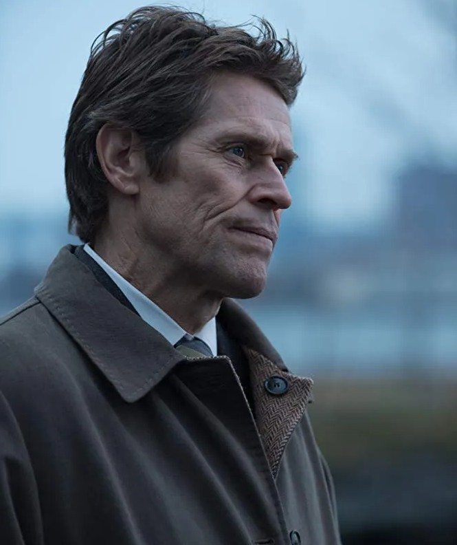
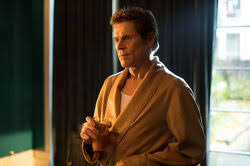
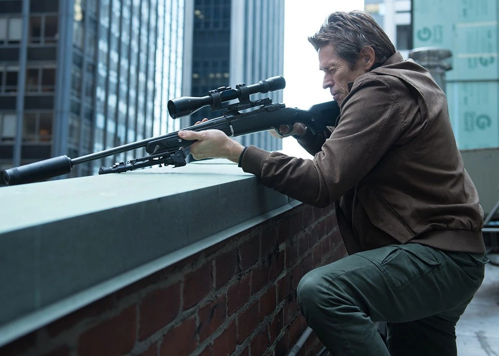

Marcus
"You made a new life, you'll find a way to back to it. It's time to go home."
“넌 새로운 삶을 만들었고, 결국 그곳으로 돌아갈 방법을 찾게 될 거야. 이제 집으로 돌아갈 시간이야.”
Marcus to Johnwick

Marcus
성별: 남자
국적: 미국
직업: 암살자
소속: 타라소프 조직
관계: 존윅(친구)
상태: 죽음
